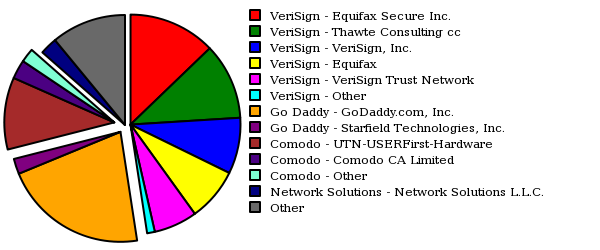

Duas alternativas viáveis para substituir ou complementar o atual cartel das Autoridades Certificadoras utilizadas na pilha SSL/TLS.
De 2008 até o momento, foram reveladas falhas fundamentais em vários protocolos básicos da internet:
Estamos falando principalmente de falhas de especificação e não de implementação ou DoS, o que é muito mais difícil de mitigar.
Pontos principais de um protocolo seguro:
No caso do SSL/TLS:
 
Depende dos processos de inclusão
Quanto mais upstream for a inclusão, maior a ubiquidade. Certificados não-instalados são considerados como autoassinados.
Há pouca transparência na relação entre CAs e fabricantes de software
Sem gestão multissetorial
Admins de instituições pequenas não tem outra escolha senão utilizar esses CAs
As CAs são confiadas exatamente por serem CAs. Onde está a abertura das auditorias?
________
| |
___| CA |--.
/ |________| \ 2
^ | :
1 | | 3 v
____|____ v __________
| | | | |
| Admin |__/ | Servidor |
|_________| |__________|
The authenticity of host 'foo.example.org (192.0.2.3)' can't be established.
RSA key fingerprint is 17:f4:2b:22:90:d4:98:9a:a2:c5:95:4e:4a:89:be:90.
Are you sure you want to continue connecting (yes/no)?
Vocês checam seus fingerprints (OpenPGP, SSH e OpenSSL)?
Maus hábitos de sysadmins geram falsa sensação de segurança
Usabilidade: Bypass da tela de “conexão não-confiável”
Certified Lies: Detecting and Defeating Government Interception Attacks Against SSL: evidence that CAs may be cooperating with government agencies to help them spy undetected on “secure” encrypted communications
Man-in-the-Middle Attacks Against SSL: a new attack, the compelled certificate creation attack, in which government agencies compel a certificate authority to issue false SSL certificates that are then used by intelligence agencies to covertly intercept and hijack individuals’ secure Web-based communications.
Comodogate: mail.google.com, addons.mozilla.org, login.skype.com, etc.
DigiNotar: certificados falsos da CIA, MI6 e Mossad (timeline).
A situação é alarmante: basta apenas que um único CA seja comprometido para ruir toda a infraestrutura.
SSL não se aplica apenas a HTTPS: StartTLS/SMTPS/IMAPS/XMPP/VPN/etc também sofrem dessas vulnerabilidades.
Certificado falso.
Meios efetivos de um MITM:
_______________
| |
| CA (local) |
|_______________|
|
^ 3
____|____ 2 __________
| |------<-------| |
| Cliente | | Servidor |
|_________|------>-------|__________|
1
________
| |
.->| MITM |-<.
/ |________| \
| |
v v
____|____ ____|_____
| | | |
| Cliente |---X----| Servidor |
|_________| |__________|
Pequenos provedores até grandes porções da internet podem ser afetados. O ataque é o mesmo, variando apenas a capacidade do atacante.
Recentemente foram propostas várias formas de mitigação:
A grande questão é: abandonar o SSL hoje é uma opção que não depende apenas dos/as usuários, porém é importante considerar que o modelo atual de certificação não é mandatório.
Ao invés disso, o modelo de CAs pode ser plugável e explorar características locais e globais.
_______________ 5 cert
| |----<----.
| Notary server | \
|_______________|---->---. \
| | 4 \ \
6 v ^ 3 h+fp \ \
_|__|____ 2 cert __\__\____
| |------<-------| |
| Cliente | | Servidor |
|_________|------>-------|__________|
1
____
.-----<-| |
| .-->-| N1 |<
___________|_|_ |____| \
| | ____ \
| Notary proxy |->-| | \
|_______________|-<-| N2 |<. \
| | |____| \ \
v ^ . \ \
| | . \ \
| | . \ \
v ^ ____ \ \
| | | | \ \
| | | Nn | \ .
v ^ |____|-<-->. . |
___|__|__ _\__v_v___
| |------<----------| |
| Cliente | | Servidor |
|_________|------>----------|__________|
Usuários e/ou admins trocam seus fingerprints OpenPGP.
________ ________
| |-->--| |
| Admin | | User |
|________|--<--|________|
___________
| |
| Keyserver |
|___________|
|
^ 3
____|____ 2 __________
| |------<-------| |
| Admin | | Servidor |
|_________|------>-------|__________|
1
___________
| |
| Keyserver |
|___________|
|
^ 3
____|____ 2 __________
| |------<-------| |
| User | | Servidor |
|_________|------>-------|__________|
1
Identificação.
Confiabilidade.
Mesmo que um usuário não tenha identificado um admin que assinou a chave de um servidor, confiabilidade ainda pode ser estabelecida por meios indiretos.
O Monkeysphere ainda é muito geeky porém oferece um nível de segurança muito mais alto para a verificação de certificados; o código está maduro porém é preciso muito mais desenvolvimento de UI e usabilidade, além de depender de uma grande WoT para ser eficaz.
O Convergence pode utilizar como backend o Monkeysphere, o que pode reduzir o problema do MITM upstream.
A indústria sabe que o modelo de CAs está falido, mas ainda assim existe uma insistência em dizer que o problema são as “maçãs podres” ou o excesso de CAs.
Os fabricantes de navegadores tem peso maior na decisão, porém dificilmente farão mudanças bruscas uma vez que a internet hoje é muito dependente na infraestrutura de CAs.
A pluralidade de métodos e a plugalidade (:P) de soluções podem convergir num esquema de validação híbrido.
Conscientização do público é fundamental.
:)